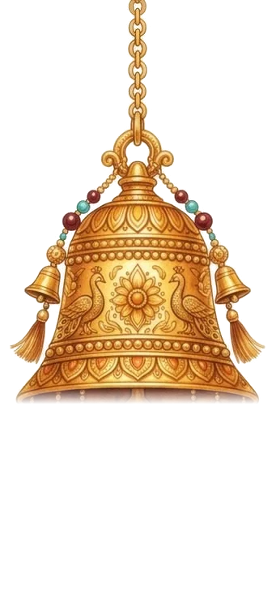

<!doctype html>
<html lang="zh-Hant"><head><meta charset="utf-8">
<meta name="viewport" content="width=device-width,initial-scale=1,viewport-fit=cover">
<title>床邊</title>
<link rel="preconnect" href="https://fonts.googleapis.com"><link rel="preconnect" href="https://fonts.gstatic.com" crossorigin>
<link rel="stylesheet" href="https://fonts.googleapis.com/css2?family=Noto+Serif+TC:wght@500;700&display=swap">
<style>
:root{--bg:#F5F0E6;--card:#FBF8F2;--ink:#3B342C;--muted:#8A7E70;--line:#E5DCCD;--acc:#C9A55A;--soft:#EFE7D8;
  --serif:"Noto Serif TC","Songti TC",serif;--f:"PingFang TC","Noto Sans TC",system-ui,sans-serif}
body.night{--bg:#1E2230;--card:#272C3C;--ink:#ECE6DA;--muted:#A49D93;--line:#3A4053;--acc:#E2C383;--soft:#30364A}
*{box-sizing:border-box;-webkit-tap-highlight-color:transparent}
html,body{margin:0;background:var(--bg);color:var(--ink);font-family:var(--f);line-height:1.65;transition:background .6s,color .6s}
button,input,textarea{font:inherit;color:inherit}button{cursor:pointer}
.wrap{max-width:620px;margin:0 auto;padding:16px 16px calc(40px + env(safe-area-inset-bottom));display:grid;gap:18px}
.top{display:flex;align-items:center;gap:8px}
.top h1{margin:0;font-family:var(--serif);font-size:22px;letter-spacing:.12em;flex:1}
.seg{display:flex;gap:4px;background:var(--soft);border-radius:999px;padding:3px}
.seg button{border:0;background:none;border-radius:999px;padding:6px 14px;font-size:13.5px;color:var(--muted)}
.seg button[aria-pressed="true"]{background:var(--card);color:var(--ink);box-shadow:0 1px 4px rgba(0,0,0,.12)}
.card{background:var(--card);border:1px solid var(--line);border-radius:18px;padding:16px;display:grid;gap:10px}
.stepn{font-size:12px;letter-spacing:.22em;color:var(--acc)}
.decl{font-family:var(--serif);font-size:clamp(18px,4.6vw,22px);line-height:1.85;white-space:pre-line}
.muted{color:var(--muted)}
.bgrid{display:grid;grid-template-columns:1fr 1fr;gap:12px}.bcard{display:grid;gap:6px;align-content:start;background:var(--card);border:1px solid var(--line);border-radius:18px;padding:16px;color:var(--ink);text-decoration:none;min-height:150px}.bcard:active{transform:scale(.98)}
.bgrid.all{grid-template-columns:repeat(auto-fit,minmax(min(100%,420px),1fr));align-items:start}
.bhead{display:flex;justify-content:space-between;align-items:flex-start;gap:10px}
.blinks{display:flex;gap:12px;font-size:13px;white-space:nowrap}
.fld{display:grid;gap:4px}.fld label{font-size:12px;color:var(--muted)}
.bfull textarea{min-height:0;resize:none;overflow:hidden;line-height:1.7;background:transparent;border-color:transparent;padding:6px 8px;margin:0 -8px;width:calc(100% + 16px);font-size:15px}
.bfull textarea:hover{border-color:var(--line)}.bfull textarea:focus{border-color:var(--acc);background:var(--bg);outline:none}
.rf{display:grid;grid-template-columns:1fr auto 1fr;gap:6px;align-items:center}.rf span{color:var(--muted)}.rf input{padding:7px 10px;font-size:13px}
.svd{color:var(--acc);font-weight:700}
.top{flex-wrap:wrap;row-gap:8px}.top h1{white-space:nowrap}@media (max-width:480px){.seg button{padding:6px 10px;font-size:13px}}.bq{font-family:var(--serif);font-size:16px;line-height:1.6}
.refr{display:grid;gap:6px}.rf{display:grid;gap:2px;padding:8px 10px;border-radius:10px;background:var(--soft)}.rf s{color:var(--muted);font-size:13px}.rf span{font-size:14.5px}
.link{color:var(--acc);text-decoration:none;font-size:13px}
.btn{border:1px solid var(--line);background:var(--card);border-radius:999px;padding:8px 16px;font-size:14px}
.btn.pri{background:var(--ink);color:var(--bg);border-color:var(--ink)}
.btn.sm{padding:4px 12px;font-size:13px}
.row{display:flex;gap:8px;flex-wrap:wrap;align-items:center}
input[type=text],textarea{width:100%;border:1px solid var(--line);border-radius:12px;padding:10px 12px;background:var(--bg)}
textarea{min-height:90px;resize:vertical}
.focus{display:grid;gap:6px}.focus div{display:flex;gap:8px;align-items:center;font-size:15px}.focus i{width:9px;height:9px;border-radius:3px;flex:none}
.chips{display:flex;gap:6px;flex-wrap:wrap}.chips button{border:1px solid var(--line);background:var(--soft);border-radius:999px;padding:4px 12px;font-size:13px}
.chips button[aria-pressed="true"]{background:var(--acc);border-color:var(--acc);color:#2A241C}
.poses{display:grid;grid-template-columns:repeat(3,minmax(0,1fr));gap:8px}
.pose{border:1px solid var(--line);border-radius:14px;padding:10px 6px;text-align:center;display:grid;gap:4px;justify-items:center;background:var(--bg);position:relative}
.pose svg{width:64px;height:48px}.pose b{font-size:14px}.pose small{font-size:11.5px;color:var(--muted)}
.pose.now{border-color:var(--acc);box-shadow:0 0 0 2px var(--acc)}.pose.done{opacity:.55}.pose.done::after{content:"✓";position:absolute;top:6px;right:9px;color:var(--acc);font-weight:700}
.timer{font-variant-numeric:tabular-nums;font-size:28px;font-family:var(--serif);text-align:center}
.orb{width:110px;height:110px;margin:6px auto;border-radius:50%;background:radial-gradient(circle at 40% 35%,#FFF6E4,#E8D3AE 70%);transform:scale(.6);box-shadow:0 10px 40px rgba(201,165,90,.3)}
.orb.in{transition:transform 4s ease-in-out;transform:scale(1)}.orb.out{transition:transform 6s ease-in-out;transform:scale(.6)}
.bellbox{display:flex;flex-direction:column;align-items:center;gap:2px;margin:-4px 0 -6px}
.bellbox button{border:0;background:none;padding:0;cursor:pointer}
.bellbox img{height:96px;display:block;transform-origin:50% 0;filter:drop-shadow(0 8px 12px rgba(120,80,20,.2))}
.bellbox img.sw{animation:bsw 2.4s ease-out}
.bellbox span{font-size:12.5px}
@keyframes bsw{0%{transform:rotate(0)}10%{transform:rotate(14deg)}25%{transform:rotate(-11deg)}40%{transform:rotate(8deg)}55%{transform:rotate(-5deg)}70%{transform:rotate(3deg)}85%{transform:rotate(-1.5deg)}100%{transform:rotate(0)}}
@media (prefers-reduced-motion:reduce){.bellbox img.sw{animation:none}}
.done-msg{text-align:center;font-family:var(--serif);font-size:20px;padding:20px 0}
.foot{display:flex;justify-content:center}
.link{background:none;border:0;color:var(--muted);text-decoration:underline;text-underline-offset:3px;font-size:13px}
.dlg{position:fixed;inset:0;background:rgba(20,18,15,.4);display:grid;place-items:end center;z-index:20;padding:12px}
@media (min-width:640px){.dlg{place-items:center}}
.dlg[hidden]{display:none}.dlg .box{width:100%;max-width:460px;max-height:88vh;overflow:auto}
.dlg h3{margin:0;font-size:17px}
.field{display:grid;gap:4px;font-size:13px;color:var(--muted)}
@media (prefers-reduced-motion:reduce){.orb.in,.orb.out{transition-duration:.01s}}
.wins{list-style:none;margin:0;padding:0;display:grid;gap:3px;font-size:14px}.wins .muted{font-size:12px}
.layers{position:sticky;top:44px;z-index:6;background:var(--bg,#F4EFE6);padding:8px 0 6px;margin:-8px 0 0;font-size:13px;letter-spacing:.06em;color:var(--acc,#B08D57);font-weight:600}.flowln{margin-top:3px;font-size:12px;color:var(--acc,#B08D57)}
</style>
<script src="../sync/origina-sync.js" data-app="bedside" data-folder="Bedside" data-keys="origina.bedside.v1,origina.prayer.v1" data-pos="br" data-offset="16"></script>
</head><body>
<main class="wrap" id="app"></main>
<div class="dlg" id="dlg" hidden><div class="box card" role="dialog" aria-modal="true" id="dlgBox"></div></div>
<script>
"use strict";
const KEY="origina.bedside.v1",PKEY="origina.prayer.v1";
const DEF_M="今天是新的一天。\n我不被外界的聲音帶走，我的身體柔軟、放鬆。\n我用聲音帶路，我允許自己被愛、也好好愛自己，我穩穩地累積豐盛。\n我先把心情照顧好，好事就會自然進來。";
const DEF_N="今天的我已經夠好了。\n我放下今天，把明天交出去。";
const ls=(k,v)=>{try{if(v===undefined)return JSON.parse(localStorage.getItem(k)||"null");localStorage.setItem(k,JSON.stringify(v));}catch(e){return null;}};
let B=ls(KEY)||{morning:DEF_M,night:DEF_N,log:[]};const save=()=>ls(KEY,B);
const $=s=>document.querySelector(s);
const esc=s=>String(s==null?"":s).replace(/[&<>"']/g,c=>({"&":"&amp;","<":"&lt;",">":"&gt;",'"':"&quot;","'":"&#39;"}[c]));
const pad=n=>String(n).padStart(2,"0"),ymd=d=>`${d.getFullYear()}-${pad(d.getMonth()+1)}-${pad(d.getDate())}`;
const dayOff=n=>{const d=new Date();d.setDate(d.getDate()+n);return d;};
const weekKeyOf=d=>{const x=new Date(d);x.setDate(x.getDate()-((x.getDay()+6)%7));return ymd(x);};
let mode=(()=>{const hs=(location.hash||"").slice(1);if(["morning","night","hh","vocal","all"].includes(hs))return hs;const h=new Date().getHours();return h>=4&&h<15?"morning":"night";})();
const READ=new URLSearchParams(location.search).has("read");   // ?read：只顯示那段話（給鬧鐘捷徑用）
addEventListener("hashchange",()=>{const hs=location.hash.slice(1);if(["morning","night","hh","vocal","all"].includes(hs)){mode=hs;render();}});
/* 全部信念：在這一頁就能看完、改完。同一個網站、同一台裝置的資料，改了直接寫回原本那一頁（HH、Vocal 打開時看到的就是這裡改的） */
const BASE="https://fuwei0618-cmd.github.io";
const HKEY="origina.hh.v1",VKEY="busk-app-v1";
const rd=k=>{try{return JSON.parse(localStorage.getItem(k)||"null");}catch(e){return null;}};
const HH_NOTE="帶著猶豫去也算數。\n今天的目標只有一個：人到教室。\n跳得好不好，是以後的事。";
// 改了別頁的資料，也替那一頁標記「待同步」，下次打開它就會上傳到 OneDrive
const dirtyFor=app=>{try{const k="origina-sync-meta:"+app,m=JSON.parse(localStorage.getItem(k)||"{}");m.dirty=true;m.localAt=Date.now();localStorage.setItem(k,JSON.stringify(m));}catch(e){}};
const FLOW={morning:"敲鈴、對自己說 → 今天的重點 → 一次深呼吸 → 開始今天",night:"今天做到的一件事 → 躺著伸展 → 明天的重點 → 敲鈴、說晚安"};
function beliefs(){
  const Hd=rd(HKEY),Vd=rd(VKEY),H=(Hd&&Hd.vision)||{},V=(Vd&&Vd.meta&&Vd.meta.vision)||{};
  return [
   {k:"morning",name:"起床",when:"每天早上",flow:FLOW.morning,open:"./#morning",listen:"./?read#morning",f:[["main","一句話・對自己說的話",B.morning,"t"]]},
   {k:"night",name:"睡前",when:"每天晚上",flow:FLOW.night,open:"./#night",listen:"./?read#night",f:[["main","一句話・睡前的話",B.night,"t"]]},
   {k:"hh",name:"HH",when:"週三晚上・出發前",open:BASE+"/Gym/hh/#belief",missing:!Hd,app:"HH 頁",
    f:[["note","一句話・出發前的話",H.note||HH_NOTE,"t"],["why","使命・為什麼想學",H.why,"t"],["become","身份・想成為的樣子（一行一個）",(H.become||[]).filter(Boolean).join("\n"),"l"],["wins","行為・小勝利",H.wins||[],"w"],["reframes","卡住時・害怕的時候",H.reframes||[],"r"]]},
   {k:"vocal",name:"Vocal",when:"上台・練唱前",open:BASE+"/Vocal/#vision",missing:!(Vd&&Vd.meta),app:"Vocal 頁",
    f:[["note","一句話・上台前的話",V.note,"t"],["why","使命・為什麼唱",V.why,"t"],["at80","身份・80 歲的我",V.at80,"t"],["become","身份・想成為的樣子（一行一個）",(V.become||[]).filter(Boolean).join("\n"),"l"],["wins","行為・小勝利",V.wins||[],"w"],["reframes","卡住時・害怕的時候",V.reframes||[],"r"]]}];}
/* 雲端：HH、Vocal 的信念也直接跟 OneDrive 對齊——打開這頁先抓雲端最新的，改了就直接上傳（跟它們自己那頁用同一個檔案） */
const OTHER={hh:{key:HKEY,file:"hh/data.json",app:"hh"},vocal:{key:VKEY,file:"Vocal/data.json",app:"vocal"}};
const pend={hh:{},vocal:{}},upT={};let pulledOnce=false;
const metaOf=a=>{try{return JSON.parse(localStorage.getItem("origina-sync-meta:"+a)||"{}");}catch(e){return {};}};
const setMeta=(a,m)=>{try{localStorage.setItem("origina-sync-meta:"+a,JSON.stringify(m));}catch(e){}};
async function cloudTok(){try{return window.OriginaSync&&await OriginaSync.getToken();}catch(e){return null;}}
function applyPend(k,d){const P=pend[k];if(!Object.keys(P).length)return d;
  if(k==="hh"){d.vision=Object.assign({type:"vision",why:"",become:["","",""],note:HH_NOTE,reframes:[],wins:[]},d.vision||{},P);}
  else{d.meta=d.meta||{};d.meta.vision=Object.assign(d.meta.vision||{},P);}return d;}
// 本機沒有那一頁的資料時，不管時間戳都直接抓雲端（以前會因為時間戳一樣而跳過，Vocal 才會時有時無）；回到這個分頁時也再抓一次
document.addEventListener("visibilitychange",()=>{if(document.visibilityState==="visible"&&(mode==="all"||mode==="hh"||mode==="vocal"))pullOthers();});
async function pullOthers(){if(!(await cloudTok()))return;let changed=false;
  for(const k of ["hh","vocal"]){const O=OTHER[k];try{const r=await OriginaSync.api.getJSON(O.file);const m=metaOf(O.app);
    const noLocal=!localStorage.getItem(O.key);if(r&&r.data&&r.data[O.key]&&(noLocal||((r.updatedAt||0)>(m.at||0)&&!(m.dirty&&(m.localAt||0)>(r.updatedAt||0))))){localStorage.setItem(O.key,r.data[O.key]);setMeta(O.app,{...m,at:r.updatedAt,dirty:false,pushedOnce:true});changed=true;}}catch(e){}}
  if(changed&&(mode==="all"||mode==="hh"||mode==="vocal")&&!document.activeElement.closest(".bfull"))render();}
async function pushOther(k){const O=OTHER[k];if(!(await cloudTok()))return;   // 沒登入：留著「待同步」，下次打開那一頁時會補傳
  try{const r=await OriginaSync.api.getJSON(O.file),m=metaOf(O.app);
    let d=rd(O.key)||{};if(r&&r.data&&r.data[O.key]&&(r.updatedAt||0)>(m.at||0)){d=applyPend(k,JSON.parse(r.data[O.key]));}   // 雲端有別台裝置的新資料：用雲端那份，再套上這次改的
    const raw=JSON.stringify(d);localStorage.setItem(O.key,raw);const data=r&&r.data?{...r.data,[O.key]:raw}:{[O.key]:raw};
    const now=Date.now();await OriginaSync.api.putJSON(O.file,{app:O.app,updatedAt:now,data});setMeta(O.app,{...metaOf(O.app),at:now,dirty:false,pushedOnce:true});pend[k]={};
    const e=$("#svd");if(e){e.textContent="・已同步到雲端";setTimeout(()=>{if(e.textContent==="・已同步到雲端")e.textContent="";},1800);}}catch(e){}}
function putBelief(k,field,val){
  if(k==="morning"||k==="night"){B[k]=val;save();return;}
  const key=k==="hh"?HKEY:VKEY,d=rd(key);if(!d)return;
  let v;if(k==="hh"){v=d.vision=Object.assign({type:"vision",why:"",become:["","",""],note:HH_NOTE,reframes:[],wins:[]},d.vision||{});}
  else{d.meta=d.meta||{};v=d.meta.vision=d.meta.vision||{};}
  v[field]=val;pend[k][field]=val;localStorage.setItem(key,JSON.stringify(d));dirtyFor(k==="hh"?"hh":"vocal");clearTimeout(upT[k]);upT[k]=setTimeout(()=>pushOther(k),1500);}
function allHTML(only){
  const mins=b=>{const n=b.f.filter(x=>x[3]!=="w").map(x=>x[3]==="r"?x[2].map(r=>(r.q||"")+(r.a||"")).join(""):String(x[2]||"")).join("").replace(/\s/g,"").length;return n?Math.max(1,Math.round(n/240)):0;};   // 大約一分鐘唸 240 字
  return `<div class="top"><h1>我的信念</h1>${segHTML()}</div><p class="layers">一句話 → 使命 → 身份 → 行為 → 卡住時</p>${only?"":`<p style="margin:-4px 0 0;font-size:13px"><a class="link" href="https://fuwei0618-cmd.github.io/Entry/mission/#me" target="_top">迷路時看結構：我是誰 ↗</a></p>`}
  <p class="muted" style="margin:-4px 0 0;font-size:13px">${only?"直接點字修改，會自動存好。":"四篇都在這裡，直接點字修改，會自動存回原本那一頁。"}<span id="svd" class="svd"></span></p>
  <div class="bgrid all">${beliefs().filter(b=>!only||b.k===only).map(b=>`<section class="card bfull" data-b="${b.k}">
    <div class="bhead"><div><div class="stepn">${esc(b.name)}</div><div class="muted" style="font-size:12px">${esc(b.when)}${mins(b)?"・約 "+mins(b)+" 分鐘":""}</div>${b.flow?`<div class="flowln">儀式：${esc(b.flow)}</div>`:""}</div>
      <span class="blinks">${b.listen?`<a class="link" href="${b.listen}">純文字</a>`:""}<a class="link" href="${b.open}" ${b.open.startsWith("http")?'target="_top"':''}>原頁 ↗</a></span></div>
    ${b.missing?`<p class="muted" style="margin:0;font-size:13px">這台裝置還沒有${esc(b.app)}的資料。登入 OneDrive（右下角雲朵）就會自動抓下來；或先<a class="link" href="${b.open}" target="_top">打開一次</a>。</p>`:
    b.f.map(([fk,label,val,type])=>type==="w"?`<div class="fld"><label>${esc(label)}</label>${val.length?`<ul class="wins">${val.slice(-5).reverse().map(w=>`<li><span class="muted">${esc(w.d||"")}</span> ${esc(w.t||"")}</li>`).join("")}</ul>${val.length>5?`<p class="muted" style="margin:2px 0 0;font-size:12px">共 ${val.length} 個，最近 5 個；在原頁加</p>`:""}`:`<p class="muted" style="margin:0;font-size:13px">還沒有，在原頁加</p>`}</div>`:type==="r"?`<div class="fld"><label>${esc(label)}</label>${val.map((r,i)=>`<div class="rf"><input type="text" data-rq="${i}" data-fk="${fk}" value="${esc(r.q||"")}" placeholder="我怕……"><span>→</span><input type="text" data-ra="${i}" data-fk="${fk}" value="${esc(r.a||"")}" placeholder="我告訴自己……"></div>`).join("")}<button class="link" data-rfadd="${fk}">＋ 再加一個</button></div>`
      :`<div class="fld"><label>${esc(label)}</label><textarea data-fk="${fk}" data-type="${type}" rows="1" placeholder="還沒寫">${esc(val||"")}</textarea></div>`).join("")}
  </section>`).join("")}</div>`;}
function wireAll(){
  const grow=t=>{t.style.height="auto";t.style.height=(t.scrollHeight+2)+"px";};
  let tm=0;const said=()=>{const e=$("#svd");if(!e)return;e.textContent="・已存";clearTimeout(tm);tm=setTimeout(()=>{e.textContent="";},1400);};
  document.querySelectorAll(".bfull textarea").forEach(t=>{grow(t);t.oninput=()=>{grow(t);const k=t.closest("[data-b]").dataset.b;putBelief(k,t.dataset.fk,t.dataset.type==="l"?t.value.split("\n").map(x=>x.trim()).filter(Boolean):t.value);said();};});
  const rfs=k=>{const d=rd(k==="hh"?HKEY:VKEY);const v=k==="hh"?(d&&d.vision):(d&&d.meta&&d.meta.vision);return JSON.parse(JSON.stringify((v&&v.reframes)||[]));};
  document.querySelectorAll(".bfull .rf input").forEach(t=>t.oninput=()=>{const k=t.closest("[data-b]").dataset.b,R=rfs(k),i=+(t.dataset.rq??t.dataset.ra);R[i]=R[i]||{q:"",a:""};if(t.dataset.rq!=null)R[i].q=t.value;else R[i].a=t.value;putBelief(k,"reframes",R);said();});
  document.querySelectorAll("[data-rfadd]").forEach(b=>b.onclick=()=>{const k=b.closest("[data-b]").dataset.b,R=rfs(k);R.push({q:"",a:""});putBelief(k,"reframes",R);render();});}
const segHTML=()=>`<div class="seg"><button data-m="morning" aria-pressed="${mode==="morning"}">起床</button><button data-m="night" aria-pressed="${mode==="night"}">睡前</button><button data-m="hh" aria-pressed="${mode==="hh"}">HH</button><button data-m="vocal" aria-pressed="${mode==="vocal"}">Vocal</button><button data-m="all" aria-pressed="${mode==="all"}">全部</button></div>`;
// 從夢想版讀重點（同一個網站，同一台裝置）
function focusFor(d){const D=ls("origina.dream.v1");if(!D||!D.todo)return{tasks:[],days:[]};
  const find=id=>{for(const p of D.todo.projects){const t=p.tasks.find(x=>x.id===id);if(t)return{p,t};}return null;};
  const tasks=(D.todo.week[weekKeyOf(d)]||D.todo.week[weekKeyOf(new Date())]||[]).map(find).filter(x=>x&&!x.t.done);
  const k=ymd(d),days=(D.todo.days||[]).filter(x=>x.date===k);return{tasks,days};}
const POSES=[{n:"抱膝",s:"雙手抱膝，輕輕左右搖",svg:'<path d="M8 38h48" opacity=".35"/><circle cx="22" cy="24" r="5"/><path d="M27 27c6 2 10 0 14-4M41 23c2-6-2-10-6-9M27 30l14 0M41 30c4 0 6-4 4-8"/>'},
 {n:"仰臥扭轉",s:"膝蓋倒向一邊，換邊",svg:'<path d="M6 38h52" opacity=".35"/><circle cx="12" cy="32" r="5"/><path d="M17 33h20M37 33l8-10M45 23l6 8M24 33l-6-10M36 33l8 8"/>'},
 {n:"蝴蝶式",s:"腳掌相對，膝蓋放鬆打開",svg:'<path d="M6 40h52" opacity=".35"/><circle cx="12" cy="34" r="5"/><path d="M17 35h18M35 35l9-11M35 35l9 3M44 24l4 12M44 38l4-2"/>'}];
let pose=-1,poseLeft=0,poseTimer=null,doneToday=null,breathing=false;
function render(){
  document.body.classList.toggle("night",mode==="night");
  if(mode==="all"||mode==="hh"||mode==="vocal"){$("#app").innerHTML=allHTML(mode==="all"?"":mode);wireAll();if(!pulledOnce){pulledOnce=true;setTimeout(pullOthers,800);setTimeout(pullOthers,3500);}document.querySelectorAll("[data-m]").forEach(b=>b.onclick=()=>{mode=b.dataset.m;history.replaceState(null,"","#"+mode);stopPose();render();});return;}
  if(READ){$("#app").innerHTML=`<div style="min-height:80vh;display:grid;place-items:center;text-align:center;padding:24px"><div><div class="stepn" style="margin-bottom:18px">${mode==="morning"?"早安":"晚安"}</div><div class="decl" style="font-size:clamp(22px,6vw,30px)">${esc(mode==="morning"?B.morning:B.night)}</div><a class="link" style="display:inline-block;margin-top:28px" href="./#${mode}">打開${mode==="morning"?"起床":"睡前"}頁 →</a></div></div>`;return;}
  const M=mode==="morning",f=focusFor(M?new Date():dayOff(1)),first=(f.tasks[0]&&f.tasks[0].t.text)||(f.days[0]&&f.days[0].text)||"";
  const focusHTML=(f.tasks.length||f.days.length)?`<div class="focus">${f.days.map(d=>`<div><i style="background:var(--acc)"></i><b>${esc(d.text)}</b></div>`).join("")}${f.tasks.map(x=>`<div><i style="background:${x.p.color}"></i>${esc(x.t.text)}<span class="muted" style="font-size:12px">・${esc(x.p.name)}</span></div>`).join("")}</div>`:`<p class="muted" style="margin:0;font-size:14px">${M?"今天":"明天"}沒有排重點，就照自己的步調。</p>`;
  const tonight=(B.log||[]).find(l=>l.date===ymd(new Date())&&l.type===(M?"morning":"night"));
  $("#app").innerHTML=`<div class="top"><h1>${M?"早安":"晚安"}</h1>${segHTML()}</div><p class="layers">${M?FLOW.morning:FLOW.night}</p>
  ${M?`
  <section class="card"><div class="stepn">一・對自己說</div><div class="bellbox"><button id="ring" aria-label="敲一下鈴"></button><span class="muted">${M?"先敲一下鈴，再對自己說":"敲一下鈴，把今天收起來"}</span></div><div class="decl">${esc(B.morning)}</div></section>
  <section class="card"><div class="stepn">二・今天的重點</div>${focusHTML}</section>
  <section class="card"><div class="stepn">三・一次深呼吸</div><div class="orb" id="orb"></div><div class="row" style="justify-content:center"><button class="btn" id="breathe">${breathing?"吸氣…":"開始"}</button></div></section>
  <div class="row" style="justify-content:center"><button class="btn pri" id="finish">${tonight?"今天已經開始了 ✓":"開始今天"}</button></div>`
  :`
  <section class="card"><div class="stepn">一・今天做到的一件事</div>
    ${focusFor(new Date()).tasks.length?`<div class="chips">${focusFor(new Date()).tasks.map(x=>`<button data-did="${esc(x.t.text)}" aria-pressed="${doneToday===x.t.text}">${esc(x.t.text)}</button>`).join("")}</div>`:""}
    <input type="text" id="did" placeholder="小事也算，例如：有喝水、有練唱十分鐘" value="${esc(doneToday||"")}"></section>
  <section class="card"><div class="stepn">二・躺著伸展（每個 30 秒）</div>
    <div class="poses">${POSES.map((p,i)=>`<div class="pose${pose===i?" now":""}${pose>i||pose===3?" done":""}"><svg viewBox="0 0 64 48" fill="none" stroke="currentColor" stroke-width="2.4" stroke-linecap="round" stroke-linejoin="round">${p.svg}</svg><b>${p.n}</b><small>${p.s}</small></div>`).join("")}</div>
    ${pose>=0&&pose<3?`<div class="timer" id="tm">${poseLeft}</div>`:""}
    <div class="row" style="justify-content:center"><button class="btn" id="stretch">${pose<0?"開始伸展":pose===3?"再做一次":"跳過這個"}</button></div></section>
  <section class="card"><div class="stepn">三・明天的重點</div>${focusHTML}</section>
  <section class="card"><div class="stepn">四・睡前</div><div class="bellbox"><button id="ring" aria-label="敲一下鈴"></button><span class="muted">${M?"先敲一下鈴，再對自己說":"敲一下鈴，把今天收起來"}</span></div><div class="decl">${esc(B.night)}${first?`\n願明天的「${esc(first)}」順利。`:""}</div></section>
  <div class="row" style="justify-content:center"><button class="btn pri" id="finish">${tonight?"已經說過晚安了 ✓":"晚安"}</button></div>`}
  <div class="foot row" style="justify-content:center"><button class="link" id="pray">記一筆禱告</button><button class="link" id="editDecl">改寫${M?"起床":"睡前"}的話</button></div>`;
  document.querySelectorAll("[data-m]").forEach(b=>b.onclick=()=>{mode=b.dataset.m;history.replaceState(null,"","#"+mode);stopPose();render();});
  document.querySelectorAll("[data-did]").forEach(b=>b.onclick=()=>{doneToday=b.dataset.did;render();});
  const di=$("#did");if(di)di.oninput=()=>{doneToday=di.value;};
  const st=$("#stretch");if(st)st.onclick=()=>{if(pose<0||pose===3){pose=0;runPose();}else{nextPose();}};
  const br=$("#breathe");if(br)br.onclick=breathe;
  $("#finish").onclick=()=>{B.log=(B.log||[]).filter(l=>!(l.date===ymd(new Date())&&l.type===mode));B.log.push({date:ymd(new Date()),type:mode,did:mode==="night"?(doneToday||""):undefined,at:new Date().toTimeString().slice(0,5)});B.log=B.log.slice(-400);save();
    $("#app").innerHTML=`<div class="done-msg">${mode==="morning"?"去過好今天吧 ☀︎":"晚安，今天辛苦了 ☾"}</div><div class="row" style="justify-content:center"><button class="btn" id="back">回到${mode==="morning"?"起床":"睡前"}頁</button></div>`;$("#back").onclick=render;};
  $("#ring").onclick=ring;
  $("#pray").onclick=prayDialog;$("#editDecl").onclick=declDialog;}
let actx=null,abuf=null;
async function ring(){const b=$("#ring img");b.classList.remove("sw");void b.offsetWidth;b.classList.add("sw");navigator.vibrate&&navigator.vibrate(20);
  try{actx=actx||new (window.AudioContext||window.webkitAudioContext)();if(actx.state==="suspended")await actx.resume();
    if(!abuf){const r=await fetch("../mission/sound/bell.mp3");const ab=await r.arrayBuffer();abuf=await new Promise((res,rej)=>actx.decodeAudioData(ab,res,rej));}
  }catch(e){}
  if(actx&&abuf){const s2=actx.createBufferSource(),g=actx.createGain();s2.buffer=abuf;g.gain.value=mode==="night"?.35:.6;s2.connect(g).connect(actx.destination);s2.start();}}
function runPose(){clearInterval(poseTimer);poseLeft=30;render();poseTimer=setInterval(()=>{poseLeft--;const t=$("#tm");if(t)t.textContent=poseLeft;if(poseLeft<=0)nextPose();},1000);}
function nextPose(){clearInterval(poseTimer);navigator.vibrate&&navigator.vibrate(30);pose++;if(pose>=3){pose=3;render();return;}runPose();}
function stopPose(){clearInterval(poseTimer);if(pose>=0&&pose<3)pose=-1;}
function breathe(){if(breathing)return;breathing=true;const o=$("#orb"),b=$("#breathe");o.className="orb in";b.textContent="吸氣…";
  setTimeout(()=>{o.className="orb out";b.textContent="吐氣…";setTimeout(()=>{breathing=false;b.textContent="再一次";},6000);},4000);}
function dialog(html,on){$("#dlgBox").innerHTML=html;$("#dlg").hidden=false;$("#dlg").onclick=e=>{if(e.target.id==="dlg"||e.target.closest("[data-x]"))$("#dlg").hidden=true;};on&&on($("#dlgBox"));}
function prayDialog(){dialog(`<h3>記一筆禱告</h3><p class="muted" style="margin:0;font-size:13px">會存進禱告室的禱告存摺，之後可以回來看它怎麼成真。</p><textarea id="pt" placeholder="為了什麼禱告？"></textarea><div class="row"><button class="btn pri" data-ok>存起來</button><button class="btn" data-x>取消</button></div>`,
  box=>box.querySelector("[data-ok]").onclick=()=>{const t=box.querySelector("#pt").value.trim();if(!t)return;const P=ls(PKEY)||{items:[]};P.items.push({id:"p"+Date.now().toString(36),date:ymd(new Date()),text:t,status:"open"});ls(PKEY,P);$("#dlg").hidden=true;});}
function declDialog(){const M=mode==="morning";dialog(`<h3>改寫${M?"起床":"睡前"}的話</h3><textarea id="dt" style="min-height:180px">${esc(M?B.morning:B.night)}</textarea><div class="row"><button class="btn pri" data-ok>存好</button><button class="btn" data-def>還原成預設</button><button class="btn" data-x>取消</button></div>`,
  box=>{box.querySelector("[data-ok]").onclick=()=>{const v=box.querySelector("#dt").value.trim();if(v){M?B.morning=v:B.night=v;save();}$("#dlg").hidden=true;render();};
    box.querySelector("[data-def]").onclick=()=>{box.querySelector("#dt").value=M?DEF_M:DEF_N;};});}
if(window.top===window.self){const a=document.createElement("a");a.href="https://fuwei0618-cmd.github.io/Entry/?go=f2,bed";a.textContent="← Origina";a.className="btn sm";a.style.cssText="color:var(--ink);position:fixed;left:12px;top:calc(10px + env(safe-area-inset-top));z-index:5;text-decoration:none";document.body.appendChild(a);document.querySelector(".wrap").style.paddingTop="54px";}
render();
</script>
</body></html>
